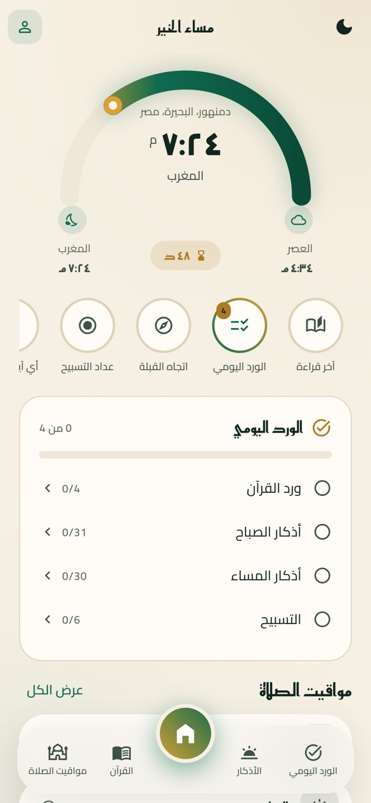
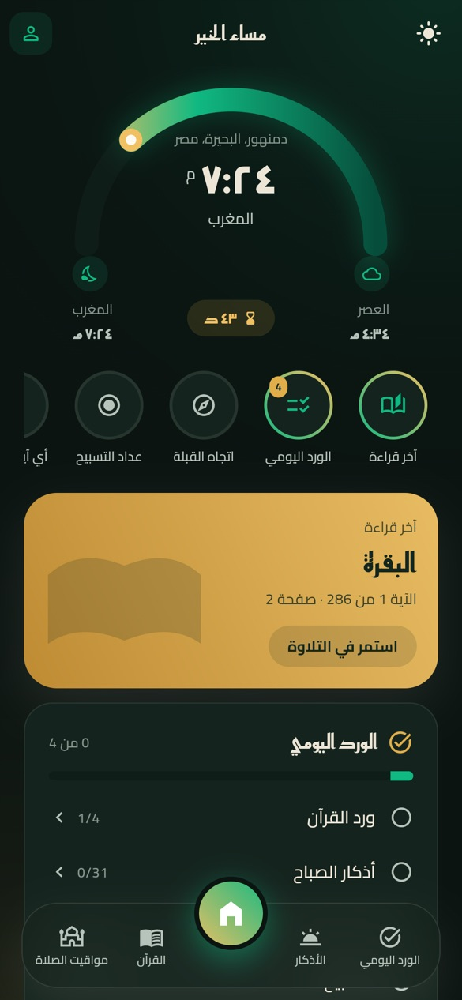

مواقيت الصلاة
- تُحسب على جهازك بحساب فلكي، لأي يوم قادم
- ثمانية مذاهب حسابية، وضبط بالدقيقة لكل صلاة
- سجّل كيف صلّيت: مسجد، جماعة، منفرد، قضاء
- جدول شهري للطباعة، وإمساكية رمضان لمدينتك
- القبلة، وأقرب المساجد، ووضع السفر
﴿إِنَّ قُرْآنَ الْفَجْرِ كَانَ مَشْهُودًا﴾الإسراء ٧٨
مواقيت تُحسب على جهازك، وأذان يصلك في دقيقته، والمصحف كاملاً، والأذكار، وورد يومي يتابعك. كل هذا بلا إنترنت.


مبنيّ ليعمل حين لا يعمل غيره: المصحف والمواقيت والأذكار على جهازك، بلا اتصال وبلا حساب.
كثير من الهواتف توقف التطبيقات المغلقة لتوفير البطارية، فيضيع الأذان. الفجر مبنيّ ليتجاوز ذلك.
لقطات حقيقية من التطبيق نفسه، لا رسوم تشبهه. اضغط على أي صورة لتكبيرها.
الإصدار ١٫٦٫٤. الروابط تشير دائماً إلى آخر إصدار.
الاختيار الصحيح لأي هاتف من آخر ثماني سنوات تقريباً.
تحميل لأندرويدإن لم تتثبّت النسخة الأولى على هاتفك، فهذه له.
تحميل النسخة ٣٢ بتليس على متجر آبل بعد، فيُثبَّت بأداة مثل Sideloadly أو AltStore أو TrollStore.
تحميل لآيفونالملفات مبنية آلياً من الشيفرة المصدرية على GitHub Actions، ومنشورة في صفحة الإصدارات.
راسلني مباشرة، أو افتح بلاغاً على GitHub.